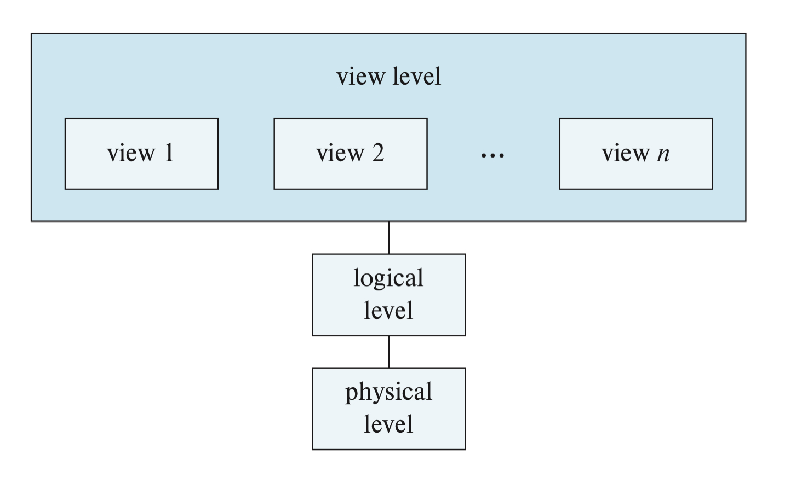
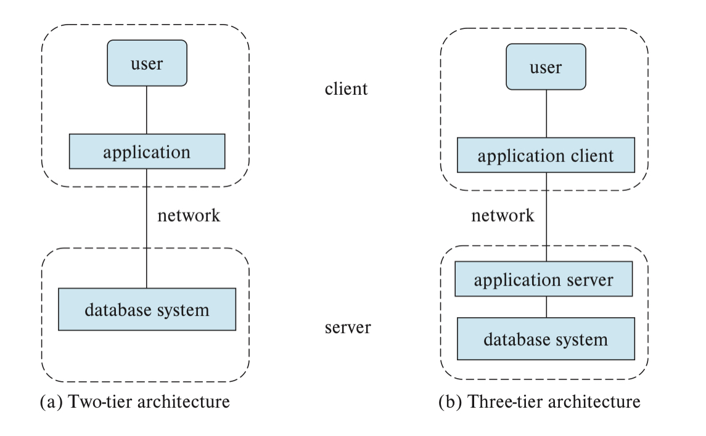

1 Introduction
Overview
DATABASE MANAGEMENT SYSTEM (DBMS)- collection of interrelated data and a set of programs to access those data- goal is to store and retrieve database info. conveniently and efficiently
DATABASE- the collection of data that contains info. relevant to the enterprise
1.1 Database System Applications
- DSMS are used to manage collections of data that are:
- highly valuable
- relatively large and
- accessed by multiple users and applications at once
- DBMs uses ABSTRACTION to manage the COMPLEXITY of a data collection
- abstraction allows an user to use a complex device/system w/o having to know the details of how the system/device is constructed
Some Example Applications
- human resources - info. about employees, salaries, payroll taxes, benefits and for generation of paychecks
- Credit Card Transactions
- Airlines were among the first to use databases in a geographically distributed manner for reservations and schedule info.
- Web-based services such as social media, online retailers, online advertisements
- Document-based for maintaining articles, patents, publications
- Navigation systems
1.2 Purpose of Database System
FILE PROCESSING SYSTEM- is supported by a conventional operation system; stores permanent records in various files and needs different applications programs to extract records from, and add records to the appropriate filesMany disadvantages of a file processing system:
DATA REDUNDANCY AND INCONSISTENCY- due to different files with different structures and written in different languages by programmers over time
DIFFICULTLY ACCESSING DATA - b/c conventional file-processing do NOT allow data to be retrieved in an efficient manner
DATA ISOLATION - must write a new application program to retrieve data scattered in various formatted files
INTEGRITY PROBLEMS - not being able to satisfy consistency constraints
Ex. not being able to the program to enforce new constraintsATOMICITY PROBLEMS - changes must be atomic (it must happen in its entirety or not at all)
Ex. a bank transfer from account A to B. A credit and a debit must occur, not just oneCONCURRENT-ACCESS ANOMALITIES - when 2 user change the data and both changes are updated leading to 2 different results and supervision is DIFFICULT
These difficulties prompted the transitions from file-based apps. to database systems in the 1960s and 1970s
1.3 View of Data
major purpose of a database is to provide and ABSTRACT view of data while hiding the details of how data are stored and maintained
DATA MODELS- the underlying structure of a database; a collection of conceptual tools, data relationships, data semantics, and consistency constraints- all data can be classified into 4 categories:
RELATIONAL MODELS,ENTITY RELATIONAL MODEL,SEMI-STRUCTURED DATA MODEL,OBJECT-BASED MODEL
- all data can be classified into 4 categories:
\[\\[.1cm]\]
RELATIONAL MODEL- uses a colletion of tables to represent both the data and the relationships among those data
Tables are also called relations and each table has multiple columns with unique names
ENTITY-RELATIONAL (ER) MODEL- uses a collection of basic objects called ENTITIES and RELATIONSHIPS among those objectsSEMI-STRUCTURED DATA MODEL- permits specification of data where individual data items of the same type may have different attributes- data items in the models above must have the same set of attributes
- most widely used semi-structured data representations are JSON and extensible markup language (XML)
\[\\[.1cm]\]
OBJECT-BASED DATA MODELS- extends the relational model w/notions of encapsulation, methods, and object identityDATA ABSTRACTION- hiding the complexity of the system from users to simplify their interaction w/the system- 3 levels of abstractions:

Levels of Abstraction - `VIEW LEVEL`- the highgest level of abstraction that only describes the part of the database; exist to simplify interaction w/the system and the system may provide multiple views for the same database
- `LOGICAL LEVEL` - describes the entire databse in terms of a small number of relatively simple structures
- `PHYSICAL LEVEL` - the lowest level of abstration that describes how the data is stored in detail Users at the logical level does not need to be aware of the complex physical structure involved (a.k.a physical data independence). Database adminstrators who decide on what info. to keep uses this level
SCHEMA- the overall design of the database- physical schema -> the design at the physical level
- logical schema -> the design at the logical level
- subschema -> the design at the view level
logical schema most important b/c programmers use this schema to construct applications
applications exhibit
PHYSICAL DATA INDEPENDENCEif they do not depend on the physical schema
1.4 Database Languages
- a DBMS provides a data-definition language (DDL) to specify the database schema and a data-manipulation language (DML) to express database queries and update
- in practice DDL and DML are parts of a single database language such as SQL and almost all relational models use SQL
\[\\[.1cm]\]
DATA STORAGE AND DEFINITION- a set of statements in a special type of DDL that is used to specify the storage structure an access method- these statements define the schemas implementation and are hidden from users
- DDL also provides facalities to specify integrity constraints
\[\\[.1cm]\]
- Some Constraints:
Domain Constraints - limits an attribute to a domain of possible values it can take on
Ex. integer types, character types, date/time typesReferential Integrity - ensuring that a value that occurs in one relation for a given set of attributes also appears in another set of attribute fro another relation
Ex. a department listed for a course must actually exist in the universityAuthorization -limits access among types of user
- Read authorization - can only read - Insert authorization - insert new data but not change - Update authorization - allows modification but not deletions - Delete authorization - allows deletion
User may have all, some, or none of these authorizations
DATA DICTIONARY- the output of DDL statements that contaion metedata, or data about the data- can only be accessed and updated by the database system and not a regular user
\[\\[.1cm]\]
DATA-MANIPULATION LANGUAGE- enables user to access or manipulate data accessed by the appropriate data model- types of access are retrival, insertion, deletion, manipulation
- 2 types of DML: PROCEDURAL and DECLARATIVE
\[\\[.1cm]\]
PROCEDURAL DMLs- user must specify what data to get and how to get itDECLARATIVE (NONPROCEDURAL)- user must specify what data to get but not how- the database system will fiqure out an efficient way of retrieving the data
\[\\[.1cm]\]
QUERY- statement requesting retrival of info. and query language is the part of the DML that involves this info. retrieval- technically incorrect, but DML and queary lang. is often used interchangeably
- most common query language is SQL (a nonprocedural lang.)
\[\\[.1cm]\]
APPLICATION PROGRAMS- programs that use a host lang. such as C/C++, Java, or Python with embedded SQL queries to interact w/ the database- Open Database Connectivity (ODBC) standards define interfaces for C and other languages
- Java Database Connectivity (JDBC) standards define interface fro Java lang.
1.5 Database Design
Mainly involves the design of the database schema
Conceptual Design - provides a detailed overview of the enterprise
confirms all requirements are met and are not in conflict w/each other
Normalization - one of the 2 main ways on how to group attributes from various tables
- normaliztion employs a set of algorithms that takes as inputs the set of all attributes and generates a set of table - the other way is to use the Entity Relational ModelSPECIFICATION OF FUNCTIONAL REQUIREMENTS- describes the kind of operations that will be performed on the data
\[\\[.1cm]\]
LOGICAL DESIGN PHASE- the designer maps the high level conceptual schema onto the implementation data model of the database system that will be usedPHYSICAL DESIGN PHASE- where physical feature of the database are specified
1.6 Database Engine
a database system is divided into modules that deal w/a part of the system
Functional components of the system can be divided into the
storage manager, thequesry processor, andtranscation management
STORAGE MANAGER- storing, retrieving, & updating data in the database- includes the authorization and integrity manager, transaction manager, file manager, and buffer manager
- also implements several data structures as part of the physical system implementation: data files, data dictionary, indices
\[\\[.1cm]\]
QUERY PROCESSOR- includes DDL interpreter, DML compiler, and query evaluation engine
compiler translate queries into an evalution plan of low-level instructions that can be understood by the evaluation engine
compiler also performs QUERY OPTIMIZATION to pick the lowest cost evaluation plan
TRANSACTION MANAGER- consist of the concurrency-control manager and the recovery manager- concurrency-control manager ensures consistency of the database
- recovery manager ensures durability and atomicity of the database system itself & can perform failure recovery to restore database to state prior to crash/failure
1.7 Database & Application Architecture
Applications that use databases as their backend can be partitioned into 2 or 3 tier parts
2-TIER APPLICATIONS- application resides at the client machine, and invokes database system fuctionality at the server machine via query lang. statements- usually in older applications
3-TIER ARCHITECTURE- client machine acts as front end and does not contain any direct database calls; instead front end communicates with an application server and server than communicates with the database system to access data- web browsers and mobile apps are the most commonly used application clients
- better security and performance than 2-tier

2 tier vs 3 tier1.8 Database Users and Administrators
Users are defined by the way they are expected to interact w/the system
DATABASE ADMINISTRATOR (DBA)- the person who has central control over the system and performs:- schema definitions
- storage structure and access method definition
- schema & physical-organizational modification
- granting of authorization for data access
- routine maintenance